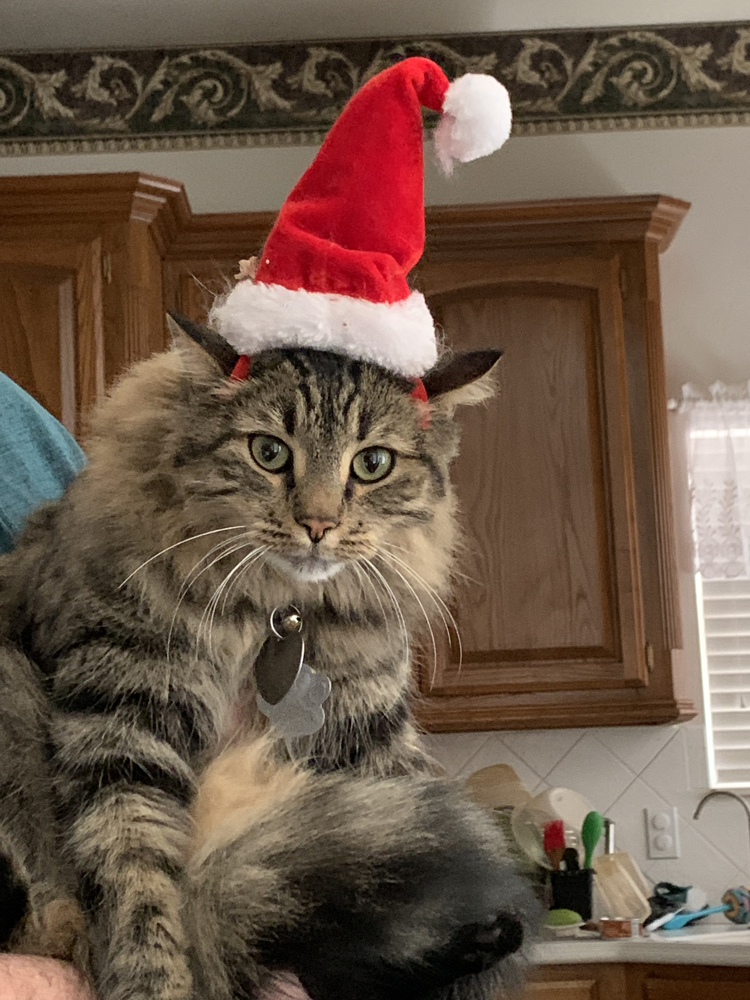

Principal Investigator
Gavin C. Woodruff, Ph.D.
Gavin (gcwoodruff(at)ou.edu) is interested in evolutionary developmental biology and seeks to understand biology from multiple perspectives. Here is his Google Scholar page.
Graduate Students
Austin Link
Austin (austin.link(at)ou.edu) is interested in host-microbe interactions, evolution, plasticity, genetics, and ecology.
Lab Manager
Kimberly Moser
 Kim (shown holding her festively-adorned cat; chittlin(at)ou.edu) is interested in the genetic bases of body size evolution and the evolution of recombination rates.
Undergraduate Students
- Courtney King
- Maggie Lehnherr
- Lily Melendez
- Reka Nagykaldi
- Daniel Schnabel
- Manu Thomas
- Lukas Weigand
- © 2020
- Design: HTML5 UP